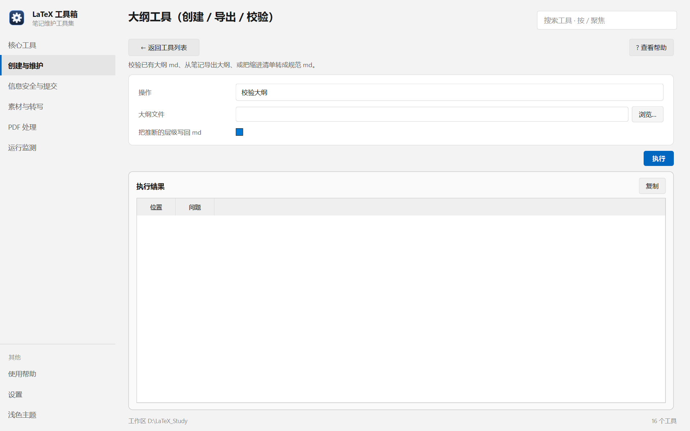

帮助目录 · 创建与维护
三种事：校验已有大纲 md 的层级是否自洽、从一本笔记反向导出大纲、把缩进清单转成规范 md。
| 面板入口 | 创建与维护 → 卡片「大纲工具」→ 选操作 → 执行 |
|---|---|
| 命令行 | python tools/outline_tool/outline_tool.py |

三种模式对应三种输入框，切换后就只剩相关的几项。
| 项 | 说明 |
|---|---|
| 操作 | 校验大纲 / 导出大纲 / 从清单新建。 |
| 大纲文件 | 校验用。支持 levels: 头部元信息与缩进层级。 |
| 把推断的层级写回 md | 默认关。开启后会把推断出的层级实际写进文件。 |
| 笔记目录 | 导出用。读 main.tex 的 \part / \chapter / \section 结构。 |
| 输出文件 | 可空。留空写在笔记目录下；已存在且内容不同会先留 .bak。 |
| 清单文件 | 格式：每行 目录名 | 中译名，用缩进表示层级，单独一行 END 结束。 |
python tools/outline_tool/outline_tool.py --check 大纲.md python tools/outline_tool/outline_tool.py --check 大纲.md --fix python tools/outline_tool/outline_tool.py --export LaTeX_Notes/General_Topology
| 内容 | 位置 |
|---|---|
| 读出的大纲 | 笔记目录下的 main.tex 与各级 index.tex |
| 写出的 md | 由「输出文件」决定，默认写在笔记目录 |
| 备份 | 覆盖前生成 *.bak |
Q：校验报「层级跳跃」
A：例如 part 直接接 subsection。这会让 LaTeX 的编号与目录错乱，补一层 section 即可。
Q：勾了写回但文件没变
A：推断的层级与现状本来就一致时，不做任何写入。看结果里的「无变化」条目。
Q：导出的章节顺序和我预期的不同
A：导出按 \input 的实际顺序走，不是按文件名排序。
Q：清单里的中文名可以省略吗？
A：可以，写成 Basic_definitions 一行也行；省了就用目录名当标题。
Q：为什么大纲里的 *（星号节）没出现在导出结果里？
A：带星号的标题不编号、不进目录，导出时会被跳过。导引与小结就属于这一类。